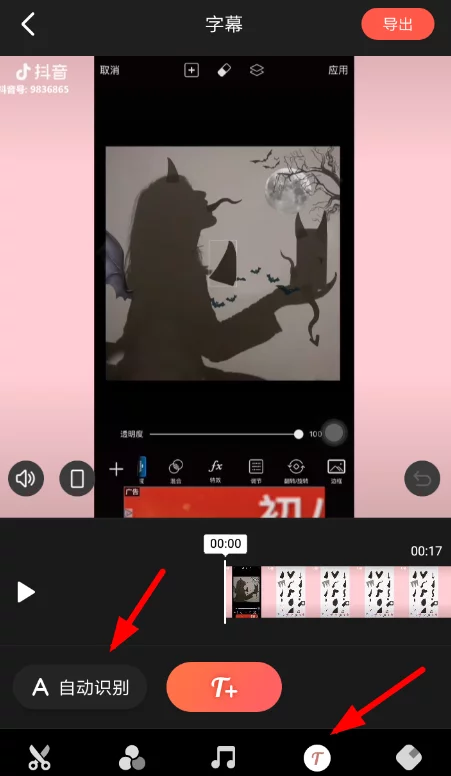

工欲善其事必先利其器，一款好的视频剪辑软件带给你的不止有轻松，还可以让你走进另一个全新的世界！最近快影就带我进入了一个全新世界。今天就和大家分享一下这款软件，谈一下它的利与弊。
第一，快影是一款免费的视频拍摄、剪辑软件,视频拍摄还带有各种美颜功能和滤镜,能够满足广大用户的美颜需求。
第二，快影可以为拍摄的视频配上各类背景音乐或者搞笑音效。
第三，制作视频，字体也是相当重要的一个环节。快影不仅可以单独编辑封面和字体，还可以编辑正文字体。
第四，快影可以自动识别视频字幕并匹配到原视频当中，而且匹配准确率很高。字幕对于视频非常重要，而如果视频较长，配字幕就会非常耗时，快影的这项功能真的棒极啦！
